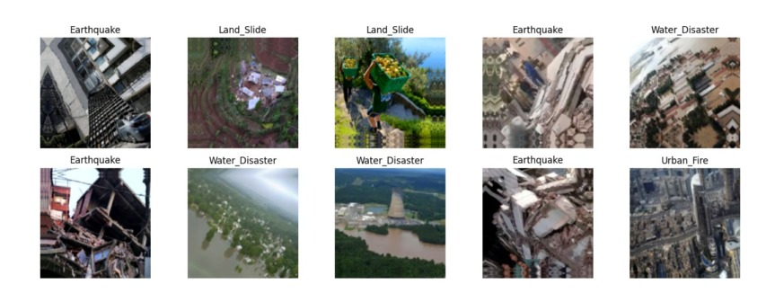

I didn't start Data Science knowing exactly what role I wanted.
What kept me interested was the process: trying things, comparing results, and slowly figuring out what I actually enjoy.
Hi, I'm Syaqila.
Data Science undergraduate at BINUS University, currently interested in Data Analytics and Machine Learning. I enjoy testing different approaches, comparing results, and understanding why a model behaves the way it does.
ABOUT
What kept me interested was the process: trying things, comparing results, and slowly figuring out what I actually enjoy.
I first chose Data Science because I was interested in technology. After going through different courses and projects, I found that I genuinely enjoy working with data, especially when I can compare approaches and understand why a result turns out a certain way.
Most of the time, I learn by experimenting. If something doesn't work, I try another way, read a little more, and keep going until it makes sense.
TOOL MAP
SELECTED WORK
An end-to-end multiclass classification project covering preprocessing, model comparison, experiment tracking, evaluation, and cloud deployment.
Extra Trees was selected after comparing Logistic Regression, Decision Tree, Random Forest, and Extra Trees.


02Compared a CNN built from scratch with EfficientNetB0 transfer learning across four disaster classes.
One application with two prediction tasks: placement classification and salary estimation.
View project ↗Built LSTM models using historical FB and IBM closing prices for time-series forecasting.
Exploring adversarial training between Generator and Discriminator networks.
View project ↗A responsive five-page community website designed in Figma and developed using HTML, CSS, and JavaScript.
View project ↗Autoencoder · Heart Disease Prediction · Student Burnout Prediction · Used Car Price Prediction · and other university projects.
Explore GitHub ↗EXPERIENCE
Started behind live broadcasts as a staff operator, later coordinated five P3K programs, and now support the next coordinator and team as a mentor.
Supported communication between the committee, sports PICs, and participants during registration and the event.
Joined a five-session teaching program at PAUD Umi in West Jakarta and helped prepare and lead different learning activities.
Managed event equipment, logistics, lighting, and sound while supporting medical and security operations during the competition.
Accompanied keynote speakers and VIP guests, coordinated with other committee teams, and communicated with guests in Indonesian and English.